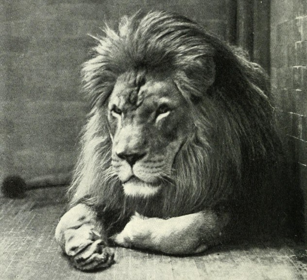
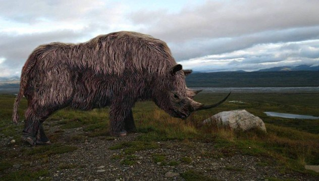

10
Koala Lemur
Megaladapis Edwarsi
Photo credit:
Though they weren't named until 1894, koala lemurs existed long ago during the late Pliocene to the Holocene period. Scientists believed they might be related to modern lemurs. However, fossil testing revealed no relation between the small Lepilemur and extinct Megaladapis edwarsi, which had a skull the size of a gorilla's.
Megaladapis edwarsi grew to 1.5 meters long (5 ft), and weighed up to approximately 75 kilograms (165 lb), possibly more. Its arms were longer than its legs, and they were made for climbing trees. It was too large to leap, and likely spent most of its life on the ground. Megaladapis edwarsi could have traveled on all fours much like an orangutan.
Humans arrived in Madagascar about 2,000 years ago. Since then, 17 known species of lemur have gone extinct. Megaladapis edwarsi is among the most notable because of its size. Being so large made it slow and easy to hunt. Radiocarbon dating shows these koala lemurs went extinct following European settlement on Madagascar; the last one died about 500 years ago.
Megaladapis edwarsi grew to 1.5 meters long (5 ft), and weighed up to approximately 75 kilograms (165 lb), possibly more. Its arms were longer than its legs, and they were made for climbing trees. It was too large to leap, and likely spent most of its life on the ground. Megaladapis edwarsi could have traveled on all fours much like an orangutan.
Humans arrived in Madagascar about 2,000 years ago. Since then, 17 known species of lemur have gone extinct. Megaladapis edwarsi is among the most notable because of its size. Being so large made it slow and easy to hunt. Radiocarbon dating shows these koala lemurs went extinct following European settlement on Madagascar; the last one died about 500 years ago.
9
Giant Australian Python
Wonambi Naracoortensis
Photo credit:
Wonambi naracoortensis lived during the Pliocene epoch in Australia. "Wonambi" is the Aboriginal word for "rainbow serpent." This enormous snake lacked the jaw flexibility of most evolved snakes. The most advanced snakes can disarticulate their jaws, while lizards have zero jaw flexibility. This means the wonambi was, in evolutionary terms, at a phase between the lizard and the modern snake. The wonambi skull resembles fossils of the Cretaceous period more closely than the skull of any modern snake.
This non-venomous wonambi grew more than 4.5 meters (15 ft) long. It had recurved teeth without fangs, and constricted its prey. Most scientific estimates peg extinction at 40,000 years ago, though it's possible they could have survived to as recently as 7,000 years ago. Similarities to other extinct snakes in South America and Africa suggest a common ancestor from the days of Pangaea. Something tells me none of them were ever house pet material.
This non-venomous wonambi grew more than 4.5 meters (15 ft) long. It had recurved teeth without fangs, and constricted its prey. Most scientific estimates peg extinction at 40,000 years ago, though it's possible they could have survived to as recently as 7,000 years ago. Similarities to other extinct snakes in South America and Africa suggest a common ancestor from the days of Pangaea. Something tells me none of them were ever house pet material.
8
Great Auk
Pinguinus Impennis
The great auk was a whimsical black and white flightless bird. Nicknamed "the original penguin," it stood about 1 meter (3 ft) tall and had tiny 15-centimeter (6 in) wings. Hundreds of thousands -possibly millions- thrived in North Atlantic ocean waters for centuries. They lived near places such as Scotland, Norway, Canada, the US, and France, but only ventured onto land to breed.
Great auks became highly valued in the 1700s. They'd been hunted for thousands of years, but during this period the killing spiraled out of control. Valuable feathers, pelts, meat, oil, and 13-centimeter (5 in) eggs tempted hunters and collectors. Great auks became endangered, and their rarity only heightened demand.
On July 3, 1844, Sigurour Isleifsson and two other men visited the last breeding colony on Iceland's Eldey Island. A mother was incubating her egg with her mate nearby. Two of the men strangled the live birds, and the third crushed the egg with his boot. The destructive trio had been hired by a merchant to hunt the birds. The great auks they asphyxiated were the last mating pair ever seen. The last known live great auk was spotted in 1852 at The Grand Banks of Newfoundland, Canada.
Great auks became highly valued in the 1700s. They'd been hunted for thousands of years, but during this period the killing spiraled out of control. Valuable feathers, pelts, meat, oil, and 13-centimeter (5 in) eggs tempted hunters and collectors. Great auks became endangered, and their rarity only heightened demand.
On July 3, 1844, Sigurour Isleifsson and two other men visited the last breeding colony on Iceland's Eldey Island. A mother was incubating her egg with her mate nearby. Two of the men strangled the live birds, and the third crushed the egg with his boot. The destructive trio had been hired by a merchant to hunt the birds. The great auks they asphyxiated were the last mating pair ever seen. The last known live great auk was spotted in 1852 at The Grand Banks of Newfoundland, Canada.
7
Schomburgk's Deer
Rucervus Schomburgki
Photo credit:
Plentiful numbers of Schomburgk's deer once roamed Thailand. The animal was described and named in 1863, after the British consul of Bangkok at the time, Sir Robert H. Schomburgk. It's estimated to have gone extinct in the 1930s. Some believe the deer still lives, but scientific observations have not validated this assertion.
Schomburgk's deer antlers were believed to contain powers of magic and healing. The species became widely sought after by hunters, and fell victim to the traditional medicine trade. During floods, they gathered at high points; this made them especially easy to kill. Boaters targeted them when they had nowhere to run. Human settlement and commercial agriculture destroyed much of their habitat.
The last wild Schomburgk's deer was killed in 1932. The last domesticated one died in 1938. Interestingly, in 1991, UN agronomist Laurent Chazee photographed a pair of antlers at a traditional medicine shop in Laos. The antlers were later identified as Schomburgk's deer antlers.
Schomburgk's deer antlers were believed to contain powers of magic and healing. The species became widely sought after by hunters, and fell victim to the traditional medicine trade. During floods, they gathered at high points; this made them especially easy to kill. Boaters targeted them when they had nowhere to run. Human settlement and commercial agriculture destroyed much of their habitat.
The last wild Schomburgk's deer was killed in 1932. The last domesticated one died in 1938. Interestingly, in 1991, UN agronomist Laurent Chazee photographed a pair of antlers at a traditional medicine shop in Laos. The antlers were later identified as Schomburgk's deer antlers.
6
Jamaican Giant Galliwasp
Celestus Occiduus
Photo credit:
The last recorded sighting of a Jamaican giant galliwasp occurred in 1840. Also known as a sinking galliwasp, it grew to around 60 centimters (2 ft) long and terrified locals. Its extinction was likely due to the introduction of predators -such as the mongoose- in Jamaica. Habitat destruction by humans may have also played a part in their elimination.
Galliwasps are a subject of fables. Jamaican natives believe the animal is venomous. After a bite, legend explains, the galliwasp and the person who was bitten will head for water. The first to reach it will live. The other will die. This is no longer a worry pertaining specifically to the Jamaican giant galliwasp, though. This species is believed to have gone extinct more than a century ago. Very little is known about this swamp-dwelling lizard, though we can tell it ate fish and fruit. Few specimens exist today. Bleached and preserved Jamaican giant galliwasps are kept at a small number of museums.
Galliwasps are a subject of fables. Jamaican natives believe the animal is venomous. After a bite, legend explains, the galliwasp and the person who was bitten will head for water. The first to reach it will live. The other will die. This is no longer a worry pertaining specifically to the Jamaican giant galliwasp, though. This species is believed to have gone extinct more than a century ago. Very little is known about this swamp-dwelling lizard, though we can tell it ate fish and fruit. Few specimens exist today. Bleached and preserved Jamaican giant galliwasps are kept at a small number of museums.
5
Giant Teratorn
Argentavis Magnificens
Photo credit:
Argentavis magnificens translates to "magnificent Argentine bird." Its skeleton was discovered in Miocene rocks in Argentina, indicating this species of giant teratorn lived in South America six million years ago. It's the largest flying bird on record. This creature could grow to more than 1.8 meters (6 ft) tall, with an impressive wingspan of 6-8 meters (19-26 ft). The heaviest among them weighed more than 68 kilograms (150 lb). Compare this to the wandering albatross, which has the largest wingspan of any modern bird at 3.5 meters (11.5 ft).
Argentavis magnificens was a member of the Accipitirformes order. Other members include hawks and vultures. Much like these birds, the giant teratorn's chest muscles would not support excessive flapping; it seems the bird mostly soared through the air, either hunting or searching for carrion. The giant teratorn's skull structure suggests it swallowed prey whole. Lifespan is estimated to have been between 50-100 years.
Argentavis magnificens was a member of the Accipitirformes order. Other members include hawks and vultures. Much like these birds, the giant teratorn's chest muscles would not support excessive flapping; it seems the bird mostly soared through the air, either hunting or searching for carrion. The giant teratorn's skull structure suggests it swallowed prey whole. Lifespan is estimated to have been between 50-100 years.
4
Barbary Lion
Panthera Leo Leo

The regal Barbary lion used to roam North Africa freely. This species was unique as it traveled, not in prides, but in pairs or small family groups. Also known as an Atlas lion, the Barbary lion was a highly recognizable and stunning creature with a distinctive head shape and mane. A male's extra-long fur surrounded the face, and grew from the chest and stomach as well.
The last wild Barbary lion was shot in Morocco in 1927. Since the sultan of Morocco owned domesticated Barbary lions, a small number of ancestors survive in captivity. These royal pets were transferred to Moroccan and European zoos for show and breeding. This isn't the only time they've been kept out of the wild, though. Barbary lions were used in combat against gladiators during the Roman Empire. What's worse than a regular old fight to the death? Being shredded to pieces by a lion might be worse.
The last wild Barbary lion was shot in Morocco in 1927. Since the sultan of Morocco owned domesticated Barbary lions, a small number of ancestors survive in captivity. These royal pets were transferred to Moroccan and European zoos for show and breeding. This isn't the only time they've been kept out of the wild, though. Barbary lions were used in combat against gladiators during the Roman Empire. What's worse than a regular old fight to the death? Being shredded to pieces by a lion might be worse.
3
Laughing Owl
Sceloglaux Albifacies
Photo credit:
The Sceloglaux albifacies laughing owl was native to New Zealand. It became rare in the mid-1800s. The island's only endemic owl, it was last spotted in 1914. Unconfirmed reports suggest it might have survived up until the 1930s. The laughing owl's hoot sounds like a creepy cackle or madman's snicker. Its vocalizations have also been compared to a dog's bark. Other species of laughing owl survive today and it’s possible to hear the sound online.
Laughing owls nested on rocks around forest borders and in open country. Some were taken into captivity. They thrived as pets, and even laid eggs without encouragement. In the wild, human settlement and habitat destruction caused them to change their diet. They switched from eating sizable birds (such as ducks) and lizards to more mammals. After this dietary adjustment, natural predators likely hunted them to extinction. Grazing and agricultural burning could have also influenced their quick eradication.
Laughing owls nested on rocks around forest borders and in open country. Some were taken into captivity. They thrived as pets, and even laid eggs without encouragement. In the wild, human settlement and habitat destruction caused them to change their diet. They switched from eating sizable birds (such as ducks) and lizards to more mammals. After this dietary adjustment, natural predators likely hunted them to extinction. Grazing and agricultural burning could have also influenced their quick eradication.
2
Bluebuck
Hippotragus Leucophaeus
Photo credit:
The extinct bluebuck may otherwise be called a blaubok or blue antelope. This animal's black and yellow coloring gave its fur a blue appearance, though the species never actually grew blue fur. It was native to southern Africa. Grassy open areas were ideal for grazing, and bluebucks also enjoyed chomping on bark. They were social creatures, and most likely nomadic. African lions, hyenas, and leopards hunted them before humans arrived.
The population began to decline noticeably around 2,000 years ago. This is when competing livestock were introduced into their habitat. Bluebucks had become rather rare by the 18th century. Predators, climate change, hunting, disease, and even the presence of animals, such as sheep, in their territory may have contributed to their extinction. The last known bluebuck was shot in 1799. Five mounted heads are displayed at different museums in Europe—one each in Austria, France, and Amsterdam, and two in Sweden.
The population began to decline noticeably around 2,000 years ago. This is when competing livestock were introduced into their habitat. Bluebucks had become rather rare by the 18th century. Predators, climate change, hunting, disease, and even the presence of animals, such as sheep, in their territory may have contributed to their extinction. The last known bluebuck was shot in 1799. Five mounted heads are displayed at different museums in Europe—one each in Austria, France, and Amsterdam, and two in Sweden.
1
Woolly Rhinoceros
Coelodonta Antiquitatis

Photo credit:
If you've ever wondered what a shaggy rhino might look like, the woolly rhinoceros is it. Fossils up to 3.6 million years old have been recovered from Asia, Europe, and North Africa-the oldest from Tibet. One woolly rhino's gigantic horns were originally mistaken for prehistoric bird claws. Wear indicates woolly rhinos brushed their horns back and forth on the ground, as modern rhinos do ritualistically. The brushing could have pushed snow and other natural obstacles out of the rhino's way.
Woolly rhinos shared territory with woolly mammoths. Though both were especially populous in Russia, neither crossed the Bering Strait land bridge into North America. Woolly rhinos lasted through many centuries. Caves in France show 30,000-year-old depictions of woolly rhinoceri. They were hunted by primitive humans, and became a common subject of cave art. A 13,300-year-old spear was found in Siberia in 2014, crafted from the horn of a mature woolly rhino. It's believed this creature went extinct at the end of the most recent ice age approximately 11,000 years ago.
Woolly rhinos shared territory with woolly mammoths. Though both were especially populous in Russia, neither crossed the Bering Strait land bridge into North America. Woolly rhinos lasted through many centuries. Caves in France show 30,000-year-old depictions of woolly rhinoceri. They were hunted by primitive humans, and became a common subject of cave art. A 13,300-year-old spear was found in Siberia in 2014, crafted from the horn of a mature woolly rhino. It's believed this creature went extinct at the end of the most recent ice age approximately 11,000 years ago.